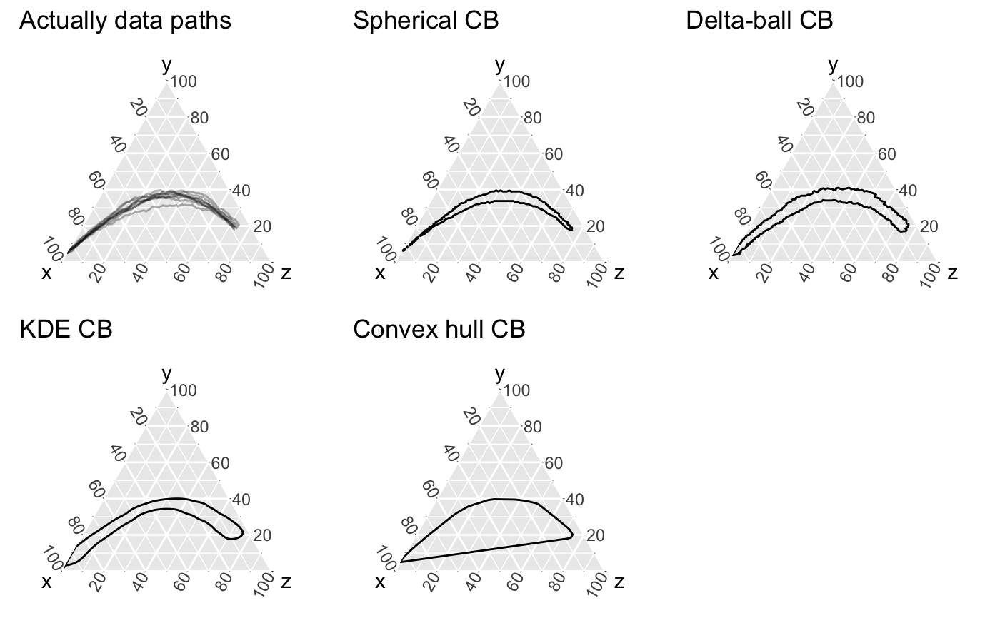

The prediction_band geom/stat
stat_prediction_band( mapping = NULL, data = NULL, geom = "polygon", position = "identity", na.rm = FALSE, show.legend = NA, inherit.aes = TRUE, pb_type = c("kde", "delta_ball", "spherical_ball", "convex_hull"), grid_size = rep(100, 2), conf_level = 0.9, over_delta = 0.1, ... ) geom_prediction_band( mapping = NULL, data = NULL, stat = list("PredBandKDE", "PredBandDeltaBall", "PredBandSpherical", "PredBandConvexHull")[c("kde", "delta_ball", "spherical_ball", "convex_hull") == pb_type][[1]], position = "identity", na.rm = FALSE, show.legend = NA, inherit.aes = TRUE, pb_type = c("kde", "delta_ball", "spherical_ball", "convex_hull"), grid_size = rep(100, 2), conf_level = 0.9, over_delta = 0.1, ... )
| mapping | Set of aesthetic mappings created by
|
|---|---|
| data | The data to be displayed in this layer. There are three options:
If A A |
| geom | string associated with desired geom. |
| position | Position adjustment, either as a string, or the result of a call to a position adjustment function. |
| na.rm | If |
| show.legend | logical. Should this layer be included in the legends?
|
| inherit.aes | If |
| pb_type | String indicating which prediction band type to use. Currently
only |
| grid_size | integer vector, length 2. Size of the grid which is going to be used to approximate prediction band (if needed). Can be reduced to speed-up computation. |
| conf_level | confidence level for prediction band. Aka, with |
| over_delta | defines small extension of box around actual points to define contour. |
| ... | Other arguments passed on to |
| stat | string associated with desired stat |
This stat/geom can create 1 of 4 prediction band structures. These approaches can be broken into 2 subgroups, "pointwise" and "uniform" prediction bands. The rational for these splits relate to containment properties and the 'original' ideas are discussed more here: Arvix: 1906.08832
Pointwise:
spherical_ball: This prediction band is defined
relative to the time points that paths take. For each time point, we take a
ellipsoid defined by the prediction region that would contain
conf_level probability mass if the distribution of points were a
multivariate gaussian. We then take a union of all these ellipsoids to create
the full prediction band.
kde: This prediction band is defined as the kde level contour
for conf_level relative to all points.
Uniform:
These approaches focus on containing the paths/curves/filaments in
uniformity. This approach uses depth (specifically a distance-based depth
developed by Geenens & Nieto-Reyes, 2017), to select to top
conf_level curves and then creates a geometric representation of
where the curves lie.
delta_ball: relative to all the points in the top
conf_level curves, we find the minimum delta such all of these points
are contained in at least 1 ball around another point with radius delta. This
can be mathematically expressed as: \(\delta = \max_{i} \min_{j} d(x_i,
x_j)\). Then we take the union of delta-balls surround all the points as the
prediction band.
convex_hull: with to all the points in the top
conf_level curves we just create a convex hull and define our
prediction band as such.
stat_prediction_band/geom_prediction_band
understands the following aesthetics (required aesthetics are in bold):
x
y
z
alpha
colour
group
linetype
size
For prediction band types = "kde", "delta_ball":
sim_group - note: this cannot be a factor
For prediction band type = "spherical_balls":
t - note:
this cannot be a factor
Learn more about setting these aesthetics in
vignette("ggplot2-specs").
library(ggplot2) library(dplyr) library(ggtern); EpiCompare:::update_approved_layers() # ^ this doesn't generally need to be done # for speed purposes smaller_pomp_df <- EpiCompare::pomp_df %>% filter(.id < 10) vis_data <- smaller_pomp_df %>% rename(x = "S", y = "I", z = "R") %>% ggplot(aes(x = x, y =y, z = z, group = .id)) + geom_path(alpha = .3) + coord_tern() + labs(title = "Actually data paths")#>vis_spherical <- smaller_pomp_df %>% rename(x = "S", y = "I", z = "R", t = "time") %>% ggplot(aes(x = x, y = y, z = z, t = t)) + geom_prediction_band(pb_type = "spherical_ball", grid_size = rep(100,2), conf_level = .95) + coord_tern() + labs(title = "Spherical CB")#>vis_delta_ball <- smaller_pomp_df %>% rename(x = "S", y = "I", z = "R") %>% mutate(.id = as.numeric(.id)) %>% ggplot(aes(x = x, y = y, z = z, sim_group = .id)) + geom_prediction_band(pb_type = "delta_ball", grid_size = rep(100,2), conf_level = .95) + coord_tern() + labs(title = "Delta-ball CB")#>vis_kde <- smaller_pomp_df %>% rename(x = "S", y = "I", z = "R") %>% mutate(.id = as.numeric(.id)) %>% ggplot(aes(x = x, y = y, z = z, sim_group = .id)) + geom_prediction_band(pb_type = "kde", grid_size = rep(100,2), conf_level = .95) + coord_tern() + labs(title = "KDE CB")#>vis_convex_hull <- smaller_pomp_df %>% rename(x = "S", y = "I", z = "R") %>% mutate(.id = as.numeric(.id)) %>% ggplot(aes(x = x, y = y, z = z, sim_group = .id)) + geom_prediction_band(pb_type = "convex_hull", conf_level = .95) + coord_tern() + labs(title = "Convex hull CB")#>